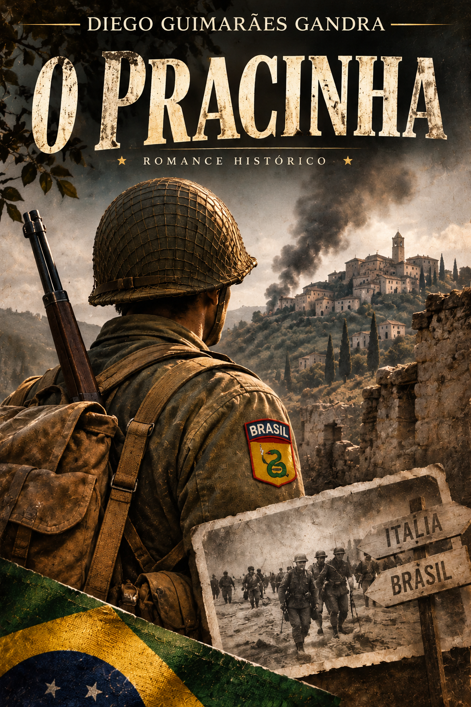

ROMANCE DE FICÇÃO HISTÓRICA
O Pracinha
Um romance sobre o brasileiro comum que foi à guerra.
Uma proposta literária que une pesquisa histórica, cronologia documentada e liberdade criativa para explorar a dimensão humana da participação brasileira na Segunda Guerra Mundial.
Período retratado: 1938–1945.
O PRACINHA
Sobre a proposta literária
O Pracinha é um romance de ficção histórica em desenvolvimento, ambientado no Brasil e na Europa durante os acontecimentos que antecederam e marcaram a participação brasileira na Segunda Guerra Mundial.
A proposta da obra é apresentar a guerra pela perspectiva de pessoas comuns. Homens que, antes de vestirem uma farda, eram trabalhadores, estudantes, filhos, irmãos e amigos. Brasileiros que possuíam suas próprias histórias, preocupações e expectativas, até serem alcançados por acontecimentos que transformariam suas vidas.
Mais do que retratar operações militares e batalhas, o romance procura explorar o cotidiano, as relações humanas e as consequências de um conflito que ultrapassou os campos de combate.
O PRACINHA
A pesquisa histórica como fundamento
A construção de O Pracinha envolve um trabalho contínuo de pesquisa histórica, fundamental para a ambientação e para a organização cronológica dos acontecimentos narrados.
O estudo abrange o Brasil entre 1938 e 1945, o contexto político e social do Estado Novo, a influência da guerra sobre a população brasileira, a mobilização nacional, a formação da Força Expedicionária Brasileira (FEB) e sua participação na campanha da Itália.
Também são considerados aspectos muitas vezes pouco explorados nas narrativas de guerra: os costumes da época, os meios de comunicação, as condições de trabalho, o transporte ferroviário, as relações familiares, as comunidades de imigrantes e as transformações sociais provocadas pelo conflito.
Localidades, acontecimentos, unidades militares, equipamentos e condições enfrentadas pelos combatentes são pesquisados para que a narrativa mantenha coerência com o período histórico retratado.
A cronologia real funciona como uma estrutura sobre a qual os acontecimentos ficcionais são desenvolvidos, respeitando, sempre que possível, as circunstâncias e as limitações daquele momento.
O PRACINHA
Entre a História e a ficção
Embora sustentado por pesquisa histórica, O Pracinha não pretende ser um registro documental dos acontecimentos.
Seus personagens centrais, diálogos e experiências individuais pertencem ao universo da ficção. A liberdade literária permite construir relações, conflitos e situações que aproximam o leitor das experiências humanas daquele período.
Essa liberdade, entretanto, não significa desconsiderar a História.
A intenção é preservar a fidelidade ao contexto histórico, sem abrir mão dos recursos narrativos próprios de um romance. Os fatos documentados oferecem o cenário e os limites da narrativa; a ficção permite explorar aquilo que os registros históricos nem sempre conseguem revelar: os sentimentos, os receios, os afetos e as pequenas decisões de pessoas comuns diante de acontecimentos extraordinários.
A História estabelece o contexto. A ficção dá voz aos personagens.
O PRACINHA
Uma homenagem aos brasileiros da FEB
A obra também nasce do desejo de preservar a memória dos brasileiros que participaram da Segunda Guerra Mundial.
Não apenas daqueles cujos nomes ficaram registrados nos livros de História, mas também dos milhares de homens que deixaram suas famílias e suas rotinas para servir em terras estrangeiras.
O Pracinha procura reconhecer a dimensão humana dessa participação, sem idealizar a guerra ou transformar seus personagens em figuras invulneráveis.
É uma homenagem aos que partiram, aos que retornaram, aos que ficaram pelo caminho e às famílias que viveram as consequências desse período.
Porque a História registra os acontecimentos. A literatura também pode ajudar a preservar as pessoas que os viveram.